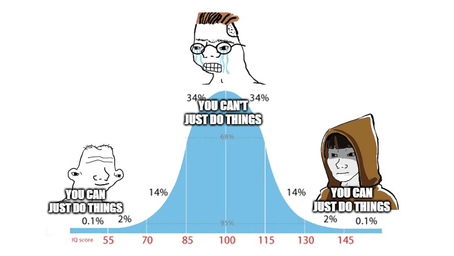

The Emotion/Feeling Discontinuity
 Teddy Warner
| Dec 2024
| 5-6 mins
Teddy Warner
| Dec 2024
| 5-6 mins
{kind=link}
Emotions can be defined as “guesses” about the future. They are your windows to the preconceived notions you hold about what has happened and what’s to come.
You cannot see the world “as it is”. None of us can.
You see the world as the story you tell about it. The worldview you hold may thus be described as a product of one’s input data, and the weights they apply to it.
Emotions exist to help you make decisions (i.e. fight or flight).
An emotion is:
- A Behavior
- A Process
- A Sensory System within the body (Interoception)
And quite notably, emotions are distinct from feelings. A professor once told me emotions may be described as a “constant flow of physical bodily changes built by evolution to protect the whole organism” whereas feelings are the “hidden, conscious awareness of emotion.”
This distinction may be distilled into objective (emotion) and subjective (feeling).
Adjusting your Weights¶
Self-Determination Theory¶
There are three integral conditions needed to alter your mental weight and mold the worldview you desire:
- Autonomy - your abilities.
- Belonging - your interpersonal connections.
- Confidence - your self-belief.
The first two conditions are solved problems. Build autonomy by studying and creating. Build belonging by genuinely putting yourself out there and devoting time to fostering your connections.
Confidence however is a different beast. This third condition precedes the two prior, as it takes confidence to learn and confidence to meet and connect with others.


To foster confidence, one may take advantage of the Emotion/Feeling Discontinuity. Emotions precede decision-making. Humans ‘feel’ first and think second. Given emotions are objective physiological responses, the independent variable in confidence, the ‘weight’ for you to adjust is your interpretation of emotion: your feelings.
By adjusting your interpretations of emotions, largely through changing your self-talk, you may rapidly build your confidence and comfort with discomfort.
A tangible example of this: is the emotional (physiological) response your body exhibits during feelings of both excitement and anxiety are practically identical (a ‘drop’ in the position of your stomach, etc.). As Dr. Glenn Fox, a neuroscientist at USC, puts it: by simply slamming your fists on the table and exclaiming “I’m Excited!”, regardless of how silly it sounds, you’ll begin to morph your feelings of anxiety into excitement.
Self-talk is everything in expanding confidence. Do not tolerate negative self-talk. Actively scold doubt and anxiety.
What we Resist, Persists¶
Do the opposite of what the emotion is telling you if you’d like to change it.
Feel X → Do Y
X = Signal of high stress and negative self-talk.
Y = Activity to release stress (Pound your fists down and exclaim “I’m Excited!).


A few other practices to improve self-talk: gratitude and optimism.
Gratitude is one of the key tenets of positive self-talk and one of the best predictors of life satisfaction.
“But what is more honorable than gratitude? The scope for practicing this virtue is as broad as life itself.”
- Seneca (On Benefits, 1.1.1 and 4.19.4 respectively)
Gratitude, like self-talk, is a skill, a muscle to be trained. Practice it.
Optimism is the belief that actions in the present will lead to better outcomes in the future, regardless of circumstance. Thus optimism does not connotate a positive disposition, rather indicates an individual’s ability to work through hard things.
Gradient Descent (into life satisfaction)¶
To practice positive self-talk, you must take care of your brain and your body. Follow the rule: “Whatever you do for your body, is good for your brain.”
Focusing on fun/flow, movement, sleep, and fuel can generally catalyze your gradient descent into life satisfaction.
There’s no one-size-fits-all formula for ensuring adequate amounts of all of these. Just follow the mantra introduced at the top of What We Resist, Persists: if you’re not happy with your current balance, do the opposite of what your emotions are telling you to shift towards life satisfaction.
I want to end with a few questions I was recently discussing with a friend:
- Why do you do what you do?
- When are you at your best?
- When are you at your worst?
When I’m not consistent in physical activity, proper nutrition, and adequate sleep, I become rather lethargic throughout the day.
When I begin the day with agency, I finish it as such. Thus I must act with agency. Doing so keeps me productive, creative, connected, and appreciative.
You’re in a perpetual rivalry between what you imagine you can do, and what you can achieve.
Confidence is key.
An addendum from Calix:
“I usually see the confidence and this subject as the midwit meme”

“In the beginning when we’re naive, we just do things. Then when we progress, we become self-aware judgmental, and scared, and we overthink things. In the end, we learn ourselves, and we just go back to doing things.”
-
https://pubmed.ncbi.nlm.nih.gov/24220041/ ↩
-
https://psycnet.apa.org/record/2000-16270-010 ↩
-
https://psycnet.apa.org/record/2007-08438-002 ↩
-
https://psycnet.apa.org/record/2004-21028-032 ↩
-
https://www.gutenberg.org/files/3794/3794-h/3794-h.htm ↩
-
https://www.amazon.com/Range-Generalists-Triumph-Specialized-World/dp/0735214484 ↩
-
https://www.amazon.com/Why-We-What-Understanding-Self-Motivation/dp/0140255265 ↩
-
https://doi.org/10.1093/acrefore/9780190236557.013.154 ↩
-
https://pubmed.ncbi.nlm.nih.gov/23535977/ ↩
-
https://pubmed.ncbi.nlm.nih.gov/23945981/ ↩
-
https://pubmed.ncbi.nlm.nih.gov/21942377/ ↩
-
https://pubmed.ncbi.nlm.nih.gov/25795524/ ↩
-
https://onlinelibrary.wiley.com/doi/10.1017/S0048577201393198 ↩
-
https://psycnet.apa.org/record/2012-11874-012 ↩
-
https://pubmed.ncbi.nlm.nih.gov/19558399/ ↩
-
https://pubmed.ncbi.nlm.nih.gov/20364902/ ↩
Enter your email to receive the occasional update.